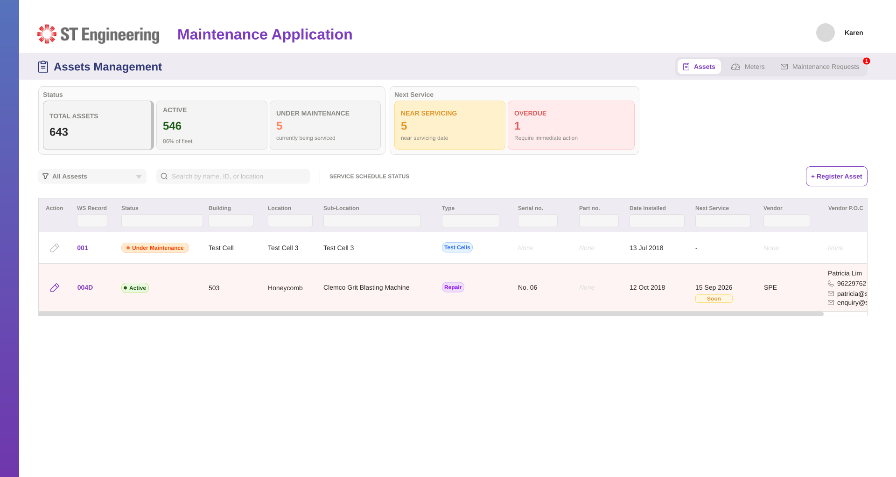
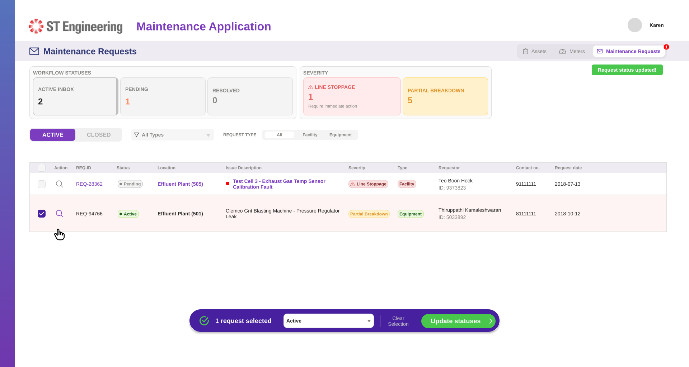
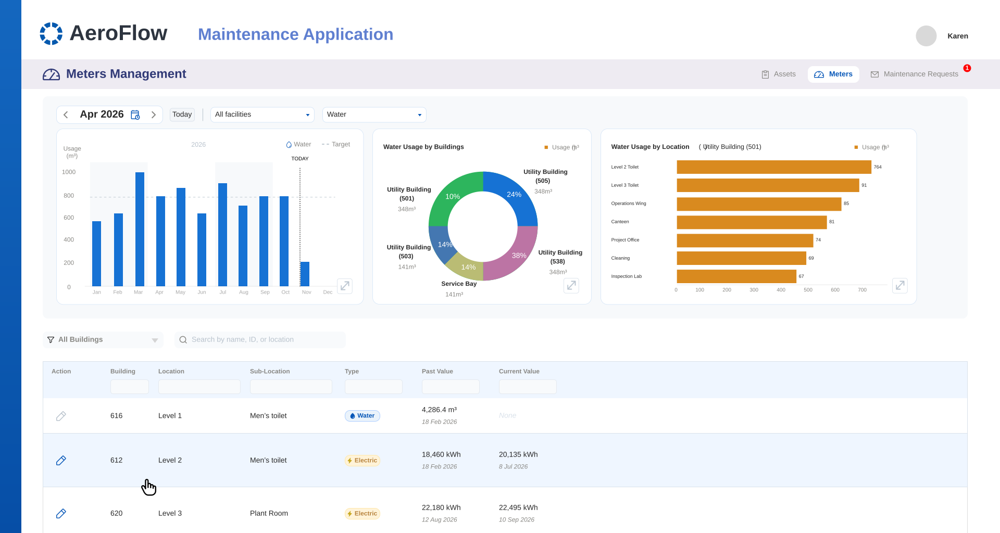
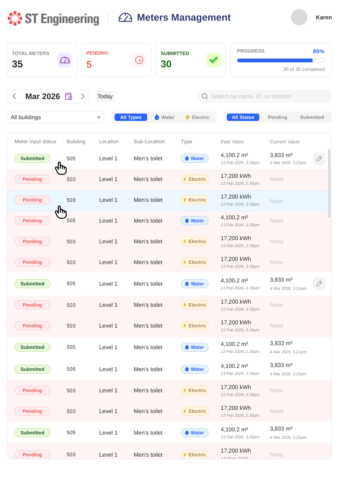
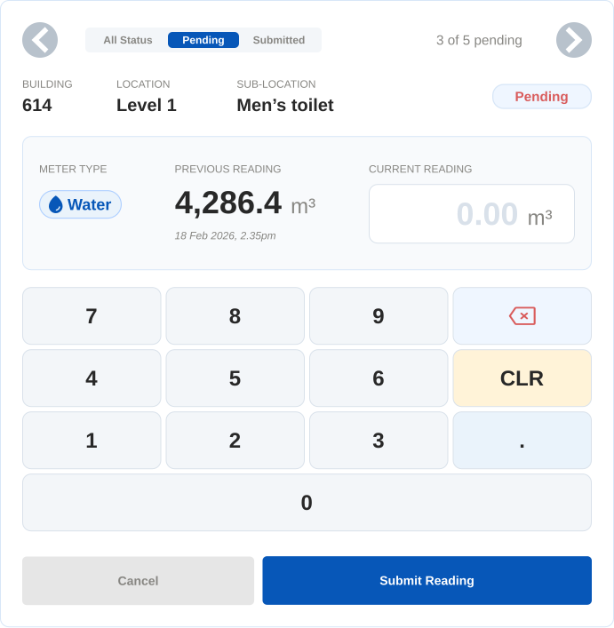

UI/UX
Designing AeroFlow's Asset & Meter Workflows
Screen designs and app flow for "AeroFlow," a facilities maintenance platform — tracking assets, logging utility meter readings, and managing maintenance requests from report through to resolution.

A searchable register of building assets (HVAC, fire pumps, lifts, generators and more), with maintenance status and vendor contact details at a glance.

An inbox-style workflow queue, filterable by severity (line stoppage vs. partial breakdown) and status, with requestor contact details attached.

Usage trends and a building-by-building breakdown for water and electricity, built for facilities managers reviewing consumption over time.

The field view technicians use to see which meters are still pending a reading for the day, and which are already submitted.

A focused mobile form showing the previous reading alongside the new one, to catch entry errors before they're submitted.